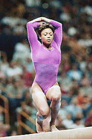

Dominique Dawes (USA)
1996 Olympic FX Bronze Medalist

Medal Total
Olympic Games:
1 Gold, 2 Silver
World Championships: 3 Silver
Dominique was born on November 20, 1976, in Silver Spring, MD, and was coached by Kelli Hill at Hill's Gymnastics. She made her Olympic debut in 1992 at age 15 and won a team bronze. The following year, Dawes won 2 silver medals at the world championships and, if not for a fall on vault, would have won the overall competition. Like several of her 1992 teammates, Dawes stuck around for 1996. She and her teammates were dubbed the Mag 7 after they won the team gold medal. Dawes also won a bronze on FX.
Following the Atlanta Games, Dawes took part in tours and professional competitions, and even appeared on Broadway in the musical "Grease." Dawes returned to the gym in the late 1990s with the goal of making her third Olympic team. She was successful -- and helped the team to a fourth-place finish.
Dawes graduated from the University of Maryland with a degree in communications. She does television commentary, motivational speaking, and is the president of the Women's Sports Foundation.
Competition Results
1987
Jr. USAIGC Championships: 5th AA
1988
Capital Cup: 1st FX
Jr. US Championships: 17th AA
Jr. US Classic "A": 10th AA
Parkette Invitational: 6th FX
1989
Jr. American Classic: 4th AA
Jr. Parkette Invitational: 1st AA
US Olympic Festival (Jr. US Championships): 12th AA
1990
American Classic: 6th AA
Buckeye Classic: 1st AA, 1st V, 1st B, 1st FX
Capital Cup: 1st AA
Jr. Black-Eyed Susan Invitational: 1st AA, 1st V, 1st UB, 1st B, 1st FX
Jr. Pan American Games: 2nd AA
Jr. US Championships: 3rd AA
1991
American Cup: 5th AA (prelims)
Dutch Open: 2nd AA
Intl. Mixed Pairs: 7th AA
Jr. Buckeye Classic: 2nd AA
Parkette Invitational: 2nd AA
US Championships: 9th AA, 1st FX
US Classic: 6th AA
1992
Buckeye Classic: 1st AA
Olympic Games: 3rd Team, 26th AA (prelims)
Parkette Invitational: 1st AA
US Championships: 4th AA, 1st UB
US Olympic Trials: 4th AA
USA-JPN Dual Meet: 1st Team, 1st AA
World Championships: 16th V (semi-final), 31st FX (qualification)
1993
American Classic: 2nd AA
Buckeye Classic: 1st AA
Intl. Mixed Pairs: 8th Team
US Championships: 2nd AA, 1st V, 1st B, 2nd FX, 3rd UB
US Classic: 1st AA
USA-BLR-UKR: 1st Team, 2nd AA
World Championships: 4th AA, 2nd UB, 2nd B
1994
American Classic: 1st AA, 1st V, 1st B, 1st FX
American Cup: 1st AA
Chunichi Cup: 6th AA, 1st UB, 1st B, 2nd FX
Intl. Mixed Pairs: 1st Team
US Championships: 1st AA, 1st V, 1st UB, 1st B, 1st FX
USA-BLR-CHN: 1st Team, 1st AA
World Championships (Brisbane):5th AA, 4th UB, 6th B, 6th FX
World Championships (Dortmund): 2nd Team
1995
US Championships: 4th AA, 1st UB, 1st FX, 3rd B, 4th V
US Classic: 2nd AA
US World Trials: 5th AA
USA-BLR-CHN: 1st Team, 12th AA
USA-UKR Dual Meet: 1st Team, 2nd AA
1996
American Classic: 2nd AA
Gymnix International: 1st AA
Olympic Games: 1st Team, 17th AA, 3rd FX, 4th UB, 6th V
US Championships: 6th AA, 1st V, 1st UB, 1st B, 1st FX
US Olympic Trials: 3rd AA
World Championships: 3rd B, 11th UB
1997
Reese's Intl. Gymnastics Cup: 3rd Team
1998
American Classic: 8th AA
Goodwill Games: 5th UB
Reese's International: 4th AA
2000
Olympic Games: 4th Team
US Championships: 9th AA
US Olympic Trials: 7th AA
This page was created on January
3, 2004 and was last updated on November 19, 2005.
© Gymn Forum